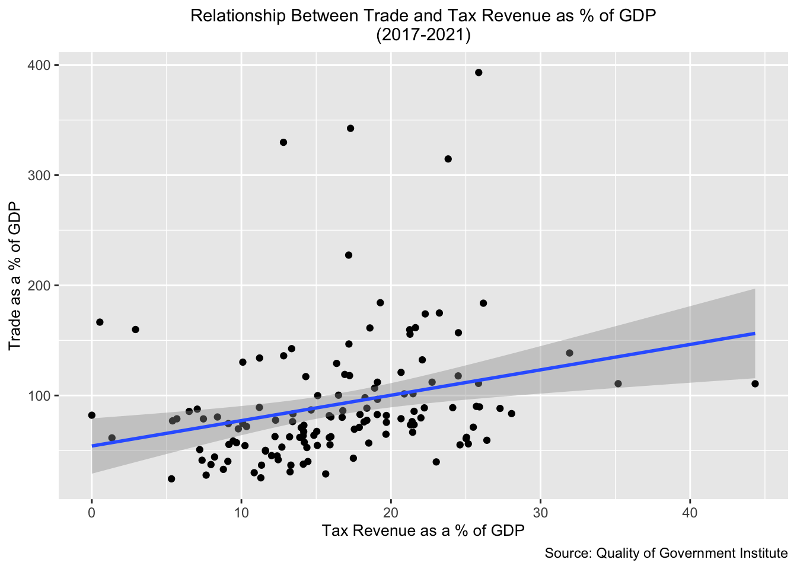
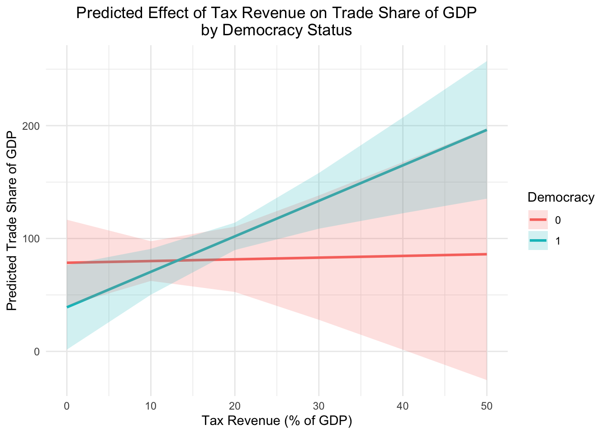
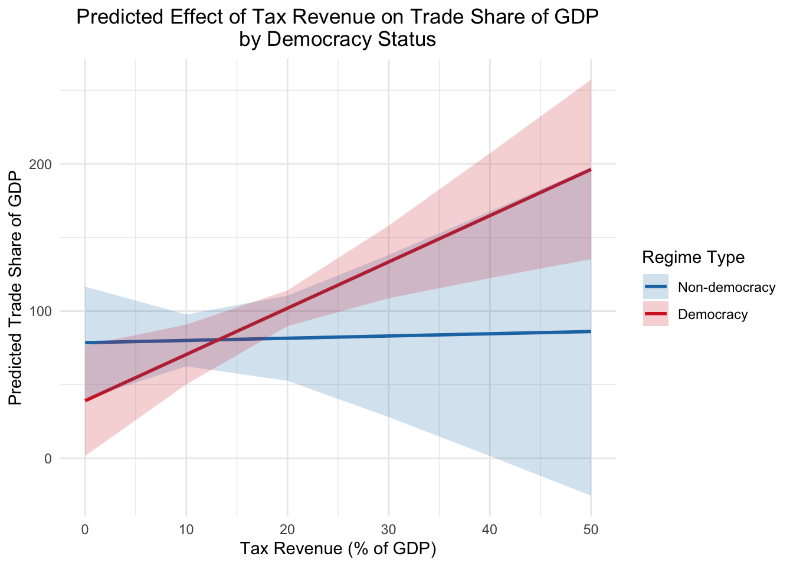
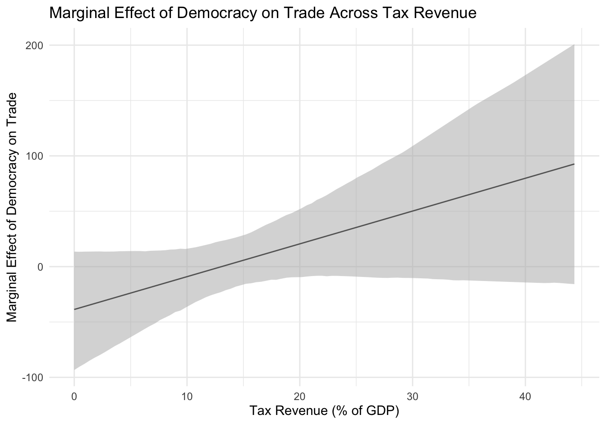
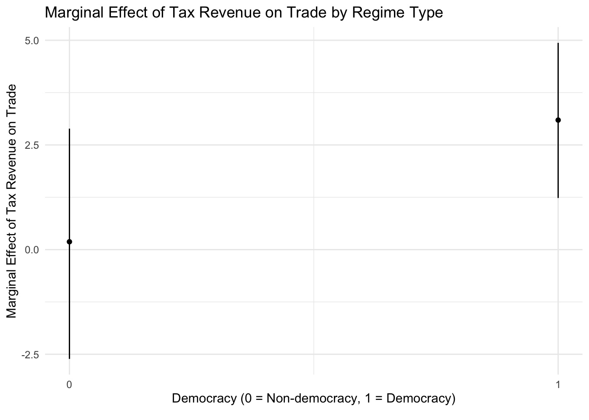

# load packages
library(tidyverse)
library(psych)
library(janitor)
library(fastDummies)
library(summarytools)
library(stargazer)
library(gtsummary)
library(ggeffects)
library(effects)
library(interplot)5 Elementary Data Visualization and Analysis
5.1 Introduction
In this session, we’ll turn from tasks related to data processing and wrangling to creating basic visualization and analysis products in R. We will cover descriptive statistics, data visualization using the ggplot2 package (part of the tidyverse suite), and linear regression, and also explore how to export analysis and visualization objects related to such tasks (i.e. plots, regression and summary statistics tables etc.) out of R for use in external applications. Our focus will be on practical issues related to implementing analysis workflows in R, rather than conceptual or methodological issues related to visualization or statistical techniques (which is beyond our curren scope)
5.2 Preliminaries and Set-Up
We will be using the following packages. Please install any packages that are not already installed (using the install.packages() function, and load them into memory using the library() function:
We will continue working with the Quality of Government Institute’s basic cross-sectional dataset, which we introduced and began exploring in the previous lesson. Please go ahead and read in that data if it is not already in memory, and assign it to an object named qog:
# read in qog data and assign to object named "qog"
qog<-read_csv("data/quality_of_government/qog_bas_cs_jan25.csv")Rows: 194 Columns: 331
── Column specification ────────────────────────────────────────────────────────
Delimiter: ","
chr (3): cname_qog, cname, ccodealp
dbl (328): ccode_qog, ccodecow, ccode, ajr_settmort, atop_ally, atop_number,...
ℹ Use `spec()` to retrieve the full column specification for this data.
ℹ Specify the column types or set `show_col_types = FALSE` to quiet this message.As before, we’ll make a copy of qog to work with:
# make a copy of the "qog" data and assign to "qog_copy"
qog_copy<-qogNow, we’ll go ahead and select some variables of interest to work with, and assign the modified dataset to a new object named qog_copy_selection:
# select qog variables and assign modified dataset to object named "qog_copy_selection"
qog_copy_selection <-
qog_copy %>%
dplyr::select(cname_qog,
cname,
ccodealp,
undp_hdi,
wdi_expedu,
wdi_acel,
wdi_area,
wdi_taxrev,
wdi_expmil,
wdi_fdiin,
wdi_trade,
cbie_index,
ht_region,
wbgi_rle,
bmr_dem,
atop_ally,
gol_est,
mad_gdppc,
mad_gdppc1900,
bci_bci,
lis_gini,
top_top1_income_share,
wdi_wip)Currently, the “ht_region” variable contains numeric codes that specify a country’s region in the world (see the QOG dataset codebook for more details). We will use this variable to make a new categorical variable that encodes the region information as a string, which will make it easier to interpret in the course of making visualizations and computing relevant statistics. To do so, we will use the case_when() function introduced in the previous session. We’ll assign the change back to the qog_copy_selection object:
# Create new character variable named "region" based on "ht_region" variable that contains region information encoded as strings
qog_copy_selection<-
qog_copy_selection %>%
mutate(region=case_when(ht_region==1~"EasternEuropePostSoviet",
ht_region==2~"LatinAmerica",
ht_region==3~"NorthAfricaMiddleEast",
ht_region==4~"SubSaharanAfrica",
ht_region==5~"WesternEuropeNorthAmerica",
ht_region==6~"EastAsia",
ht_region==7~"SouthEastAsia",
ht_region==8~"SouthAsia",
ht_region==9~"Pacific",
ht_region==10~"Caribbean"))5.3 Missing Data
Before proceeding, it is important to briefly acquaint ourselves with how R handles missing data, which has implications for our main topics of interest below. Most real-world social science datasets (including the QOG dataset we are working with) have missing data, and when they are read into R, “blank” cells in a dataset are automatically coded as “NA” by R. To confirm this, view qog_copy_selection in the data viewer:
# view "qog_copy_selection" in Viewer; note NA values
View(qog_copy_selection)We’ll begin by developing some basic intuitions about missing data in R using a simple toy dataset, which we’ll create below and assign to the student_scores data frame:
# makes toy dataset, assigned to object named "student_scores"
student_scores<-data.frame(Age=c(25, NA, 30, 22, NA),
Score=c(85, 90, NA, 78, 88))Let’s print our toy student_scores data frame to get a clear sense of what it looks like:
# prints "student_scores"
student_scores Age Score
1 25 85
2 NA 90
3 30 NA
4 22 78
5 NA 88Note the “NA” values, which indicate that data corresponding to those cells is missing.
If we want to identify missing data, we can do so with the is.na() function, which returns a logical matrix with the value TRUE for missing values:
# uses "is.na" to return a logical matrix indicating missing values (TRUE for missing values)
is.na(student_scores) Age Score
[1,] FALSE FALSE
[2,] TRUE FALSE
[3,] FALSE TRUE
[4,] FALSE FALSE
[5,] TRUE FALSEIf we want the total number of missing values in the dataset, we can take the sum of is.na(student_scores) :
# calculates total number of missing values in "student_scores"
sum(is.na(student_scores))[1] 3If we want the total number of missing values per column, we can pass is.na(student_scores) as an argument to the colSum() function, which we can do because in R, logical values can be used in numeric operations; when they’re used in this way, TRUE=1 and FALSE=0.
# calculates total number of missing values per column
colSums(is.na(student_scores)) Age Score
2 1 If we wanted to calculate the percentage of missing data in the dataset, we could use our count of the number of NA values in the dataset sum(is.na(student_scores)) and divide it by the total number of cells in the dataset, derived by multiplying the dataset’s rows and columns:
# calculates missing data percentage in "student_scores"
# first calculates count of missing values and assigns it to "total_missing"
total_missing<-sum(is.na(student_scores))
# calculates total number of cells and assigns it to "total_values"
total_values<-prod(dim(student_scores))
# calculates percentage of missing data and assigns it to "missing_pct"
missing_pct<-(total_missing/total_values)*100
# prints contents of "missing_pct"
missing_pct[1] 30Calculating the percentage of data missing in a dataset can be useful, and something we may want to do frequently, so it could be useful to wrap this code into a function, which we’ll do below, and assign to a new object named missing_data_percentage():
# creates function to calculate the percentage of missing data in a dataset
missing_data_percentage<-function(dataset){
# generates count of missing values
total_missing<-sum(is.na(dataset))
# calculates total number of cells
total_values<-prod(dim(dataset))
# calculates percentage of missing data
missing_pct<-(total_missing/total_values)*100
return(missing_pct)
}Let’s test out the function on student_scores:
# passes "student_scores" as an argument to custom function "missing_data_percentage" which yields the percentage of missing data in the "student_scores" dataset
missing_data_percentage(student_scores)[1] 30We can now use this function for any other datasets we might create or work with, without having to retype a bunch of code. For example, if we wanted to calculate the percentage of missing data in qog_copy, we could pass it as an argument to missing_data_percentage:
# calculates missing data percentage in "qog_copy"
missing_data_percentage(qog_copy)[1] 33.78858If we wanted to calculate the percentage of missing data in the modified qog_copy_selection dataset, we could pass it as an argument to the missing_data_percentage function:
# calculates missing data percentage in "qog_copy_selection"
missing_data_percentage(qog_copy_selection)[1] 13.10137It could also be useful to get a sense of the percentage of missing data at more granular levels. For example, if we wanted to uncover the percentage of missing data per column, we could carry out a simple calculation using the colSums() and nrow() functions:
# calculates percentage of missing data per column in "student_scores" and assigns the resulting vector to an object named "missing_pct_per_col"
missing_pct_per_col<-colSums(is.na(student_scores))/nrow(student_scores)*100
# prints contents of "missing_pct_per_col"
missing_pct_per_col Age Score
40 20 In many cases, after identifying patterns in the missing data, we may want to remove “NA” values from a dataset or a certain section of a dataset. If we want to remove missing data, the drop_na() function from the tidyverse is useful. The drop_na() function will remove all rows from the dataset with NA values in any column. For example, the following removes all rows with NA values from the “student_scores” data frame.
# removes all rows with NA values from "student_scores"
drop_na(student_scores) Age Score
1 25 85
2 22 78The default behavior of the drop_na() function is to drop all rows with NA values in any column (i.e. only rows with complete data are kept in the dataset). However, it’s possible to change this default behavior by specifying column/variable names after passing the data frame object as an argument; when we do this, drop_na() no longer drops all rows with missing data in any column, but all rows with missing data in any specified column. For example, the code below drops all rows where “Age” values are NA, but not all rows where “Score” scores are NA
# removes all rows where "Age" has NA values in "student_scores"
drop_na(student_scores, Age) Age Score
1 25 85
2 30 NA
3 22 78If, instead, we specify “Score” as an argument, the function drops all rows where “Score” values are NA, but not all rows where “Age” values are NA.
# removes all rows where "Score" has NA values in "student_scores"
drop_na(student_scores, Score) Age Score
1 25 85
2 NA 90
3 22 78
4 NA 88Note that we can specify more than one column argument to drop_na(), in which case rows which have NA values associated with those specified columns will be dropped, but rows which have NA values with other (non-specified) columns are kept.
Imputing missing values is a complex topic beyond the scope of our workshop, but it’s worth briefly noting that for whatever reason, NA values may be incorrectly coded, or used as placeholders for other values. For example, you may know from a dataset’s codebook, or from context, that for a particular column in the dataset, observations that appear as missing/NA should actually be coded as “0”. We can use the replace_na() function to replace such NA values with their proper values. For example, let’s say that NA values in the “Score” column should actually be “0” (perhaps NA was being used as a placeholder, and needs to be converted to 0 since the student never turned in their assignment). In the replace_na() function, the first argument is the name of the data frame object, while the second is a list that indicates the column(s) with NA values that need replacement, and a specification for what they will be replaced with. In our case, the syntax looks something like this:
# replace NA values in the "Score" column with 0
replace_na(student_scores, list(Score=0)) Age Score
1 25 85
2 NA 90
3 30 0
4 22 78
5 NA 88Sometimes, we may need to make even more targeted replacements of “NA” values. For example, let’s say we want to replace the “NA” value associated with the “Age” variable that is in row #5, with the numeric value “22”, but do not want to change the “NA” in row #2 for that column. In such scenarios, using the mutate() and if_else() functions in conjunction may provide more flexibility than the replace_na() function:
# changes NA values in Age column to 22 where ID is equal to 5, and makes no changes otherwise; assigns modified data frame to "student_scores_modified"
student_scores_modified<-student_scores %>%
mutate(Age = if_else(is.na(Age) & row_number()==5, 22, Age))
# prints "student_scores_modified"
student_scores_modified Age Score
1 25 85
2 NA 90
3 30 NA
4 22 78
5 22 88In the code above, note the use of row_number() in our conditional expression; row_number() is a handy dplyr function that allows us to quickly reference row positions within data processing pipelines.
Finally, it’s important to note that base R functions like mean() and sum() will return NA if there are missing values. For example:
# calculates mean of "Score" (NA values are not excluded; default behavior)
mean(student_scores$Score)[1] NAIf we want such functions to carry out their calculations on non-NA values (while ignoring NA values), we must set na.rm=TRUE as a function argument.
# calculates mean of "Score" (NA values are excluded due to na.rm=TRUE specification; as a result, the function computes an average based on non-NA values)
mean(student_scores$Score, na.rm=TRUE)[1] 85.25It is important to emphasize that when working in R, different packages or functions may handle missing data differently, so it’s useful to consult the documentation of the packages you use for more information (especially when something is not working as expected).
5.4 Descriptive Statistics
Once we have a dataset loaded into R, and we have wrangled it into a usable form that is appropriate for analysis (the main subject of the previous lesson), the next step is usually to get a sense of the basic structure of the dataset by calculating summary statistics. This section reviews some summary statistics functions and tools we can call on for this purpose.
5.4.1 Summary Statistics Tables
A quick way to generate a table of summary statistics is to use the describe() function from the psych package. Below, we’ll generate summary statistics for the qog_copy_selection data frame by passing it as an argument to the describe() function. We’ll assign the resulting table of summary statistics to a new object named qog_copy_selection_summarystats1:
# Generate summary statistics for "qog_copy_selection" and assign table of
# summary statistics to a new object named "qog_copy_selection_summarystats1"
qog_copy_selection_summarystats1<-describe(qog_copy_selection)Let’s print the first few rows of qog_copy_selection_summarystats1 to the console:
# prints first few rows of "qog_copy_selection_summarystats1" to console
head(qog_copy_selection_summarystats1) vars n mean sd median trimmed mad min max range skew
cname_qog* 1 194 97.50 56.15 97.50 97.50 71.91 1.00 194.00 193.00 0.00
cname* 2 194 97.50 56.15 97.50 97.50 71.91 1.00 194.00 193.00 0.00
ccodealp* 3 194 97.50 56.15 97.50 97.50 71.91 1.00 194.00 193.00 0.00
undp_hdi 4 190 0.72 0.15 0.74 0.73 0.17 0.38 0.96 0.58 -0.34
wdi_expedu 5 174 4.58 2.07 4.31 4.39 1.75 0.38 14.20 13.81 1.34
wdi_acel 6 192 85.84 24.47 100.00 91.30 0.00 7.70 100.00 92.30 -1.66
kurtosis se
cname_qog* -1.22 4.03
cname* -1.22 4.03
ccodealp* -1.22 4.03
undp_hdi -0.82 0.01
wdi_expedu 3.51 0.16
wdi_acel 1.55 1.77We can also view it in the R Studio data viewer:
# view "qog_copy_selection_summarystats1" in Viewer
View(qog_copy_selection_summarystats1)Note that the describe() function returns statistics for non-numeric variables (marked with a “*” in the summary statistics table output), but these results often do not have an intuitive or meaningful interpretation. We could limit the summary statistics output to numeric variables by first modifying the data frame to remove non-numeric columns and assigning the result to a new object named qog_copy_selection_numeric:
# removes non-numeric variables and assigns modified data frame to new object named "qog_copy_selection_numeric"
qog_copy_selection_numeric<-
qog_copy_selection %>%
dplyr::select(-ht_region) %>%
dplyr::select(where(is.numeric))Now, let’s pass qog_copy_selection_numeric to the describe() function and create our summary statistics table, which we’ll assign to a new object named qog_copy_selection_numeric_summarystats2:
# Generates summary statistics for numeric variables
# (i.e. those in qog_copy_selection_numeric) using "describe()
qog_copy_selection_numeric_summarystats2<-describe(qog_copy_selection_numeric)Let’s now view the modified “numeric variables only” summary statistics table:
# views "qog_copy_selection_numeric_summarystats2" in data viewer
View(qog_copy_selection_numeric_summarystats2)Recall that we can view the documentation for any function (including those from external packages) by printing a “?” before the name of the function in the R console:
# pulls up documentation for describe() function in the "Help" tab in the bottom-right window of R Studio
?describeOne thing to note from the documentation is that the describe() function defaults to setting na.rm=TRUE; under this setting, the describe() function simply omits NA (i.e. missing) values when calculating summary statistics. If, instead, we set na.rm=FALSE, the function deletes all rows that contain missing data, and calculates summary statistics with reference to this truncated dataset that has been excised of missing values. In practical terms, it will typically make the most sense to go with the default na.rm=TRUE option, but it’s important to be clear about these different options for handling missing data in the context of the describe() function.
If you’re still struggling to understand the difference, we can explore how this works in the context of our toy dataset, student_scores:
# prints "student_scores"
student_scores Age Score
1 25 85
2 NA 90
3 30 NA
4 22 78
5 NA 88Let’s pass student_scores as an argument to the describe() function, and set na.rm=TRUE; we’ll assign the result to a new object named student_scores_summarystats:
# generates summary statistics with "describe()" function
# and assigns it to "df_sample_summary_default";
# na.rm=TRUE ignores NA values when calculating summary statistics
student_scores_summarystats<-describe(student_scores, na.rm=TRUE)Let’s now print student_scores_summarystats:
# prints "student_scores_summarystats"
student_scores_summarystats vars n mean sd median trimmed mad min max range skew kurtosis se
Age 1 3 25.67 4.04 25.0 25.67 4.45 22 30 8 0.16 -2.33 2.33
Score 2 4 85.25 5.25 86.5 85.25 3.71 78 90 12 -0.44 -1.91 2.63Note that the calculations are carried out by simply ignoring NA values. For example, the mean for the “Age” variable is (25+30+22)/3=25.67, while the mean for the “Score” variable is (85+90+78+88)/4=85.25. Now, let’s see how these calculations change when na.rm=FALSE:
# generates summary statistics with describe function and assigns
# it to "df_sample_summary_B"; na.rm=FALSE removes rows with any NA
# values before calculating summary statistics (in other words,
# summary statistics are computed on rows with complete data)
student_scores_summarystats_B<-describe(student_scores, na.rm=FALSE)
# prints "student_scores_summarystats_B"
student_scores_summarystats_B vars n mean sd median trimmed mad min max range skew kurtosis se
Age 1 2 23.5 2.12 23.5 23.5 2.22 22 25 3 0 -2.75 1.5
Score 2 2 81.5 4.95 81.5 81.5 5.19 78 85 7 0 -2.75 3.5Note that the mean of the “Age” column is now (25+22)/2=23.5, since na.rm=FALSE deletes all rows with NA values (here, rows 2, 3, and 5) before implementing the calculation. Analogously, the mean of the “Score” column is now (85+78)/2=81.5
5.4.2 Customizing Summary Statistics Tables
There are a variety of other packages that can help you generate summary statistics tables, beyond psych. For example, the summarytools package provides the descr() , which is similar to describe() from the psych package. The summarytools package defaults to providing information as a matrix, which we haven’t covered, so we pass descr(qog_copy_selection) to the as.data.frame() function to get the summary statistics table output as a data frame, which we’ll assign to a new object named qog_copy_selection_numeric_ST:
# uses "descr" function from summarytools package to
# create a table of summary statistics as a data frame
# and assigns it to "qog_copy_selection_numeric_ST"
qog_copy_selection_numeric_ST<-as.data.frame(descr(qog_copy_selection_numeric))Let’s go ahead and view qog_copy_selection_numeric_ST in the data viewer:
# views "qog_copy_selection_numeric_ST" in Viewer
View(qog_copy_selection_numeric_ST)Another handy package for generating summary statistics is stargazer. Though stargazer is most useful for creating and exporting regression tables (which we’ll explore further below), it can also produce a well-formatted summary statistics table that can be exported as a text file. For example, the code below uses stargazer to create a summary statistics table for qog_copy_selection_numeric (we’ll export it out of R as a text file in a later section):
# uses stargazer package to generate summary statistics for qog_copy_selection_numeric
stargazer(as.data.frame(qog_copy_selection_numeric), type = "text")
=============================================================================
Statistic N Mean St. Dev. Min Max
-----------------------------------------------------------------------------
undp_hdi 190 0.719 0.153 0.380 0.965
wdi_expedu 174 4.579 2.066 0.382 14.195
wdi_acel 192 85.840 24.466 7.700 100.000
wdi_area 192 663,647.400 1,839,053.000 2.084 16,376,870.000
wdi_taxrev 141 16.211 6.855 0.0001 44.347
wdi_expmil 152 1.873 1.337 0.110 7.581
wdi_fdiin 181 -2.866 97.408 -1,303.108 32.752
wdi_trade 169 89.973 57.016 24.345 393.141
cbie_index 153 0.694 0.154 0.302 0.912
wbgi_rle 193 -0.066 0.996 -2.301 2.013
bmr_dem 193 0.606 0.490 0 1
atop_ally 184 1.000 0.000 1 1
gol_est 142 1.810 0.714 1 3
mad_gdppc 162 19,024.630 20,243.310 606.859 143,468.800
mad_gdppc1900 47 2,924.333 2,007.795 817.743 8,037.571
bci_bci 191 44.262 19.486 -3.497 78.942
lis_gini 35 0.333 0.061 0.236 0.485
top_top1_income_share 193 0.159 0.045 0.060 0.274
wdi_wip 192 24.511 12.944 0.000 61.250
-----------------------------------------------------------------------------Despite the variety of options available for generating summary statistics, it is important to emphasize that if the available options do not provide exactly what you are looking for, it is possible to customize summary statistics functions to produce outputs tailored to your specific needs. For example, it could be nice to have a column in the student_scores_summarystats summary statistics table that provides information on the number of NA values there are for each variable. The describe() function does not provide this information, but that is something we can add with a little bit of extra work on our own. To get that information into student_scores_summarystats, we’ll first write a very simple function, count_missing(), to count the number of NA values in a vector:
# Define a named function to count missing values
count_missing <- function(x) {
sum(is.na(x))
}Next, we’ll iteratively apply the count_missing function to the columns of the original student_scores data frame, and generate a new vector that contains the number of NA values for each column; we will assign this vector to a new object named missing_values_vector:
# applies "count_missing" function to the columns of "student_scores",
# and deposits the results (i.e. count of missing values in each
# column of "student_scores") to a numeric vector assigned to the object "missing_values_vector"
missing_values_vector <- map_dbl(.x=student_scores, .f=count_missing)Recall that map() family functions iteratively apply a function to elements of a list or vector. It might seem surprising, then, that we used a map() function to apply a function across the columns of a data frame, but under the hood, a data frame is a kind of list, where the elements (columns) are vectors. This is what allows us to use map_dbl() across the columns of student_scores.
Now, we’ll add this vector as a column to student_scores_summarystats:
# adds "missing_values_vector" as a column named "missing_values" to "student_scores_summarystats" summary stats table
student_scores_summarystats<-
student_scores_summarystats %>%
mutate(missing_values=missing_values_vector)Let’s view the updated student_scores_summarystats object in the R Studio data viewer, and confirm that a new “missing_values” column that indicates the number of NA values for each variable has been added to the data frame:
View(student_scores_summarystats)In case we expect to carry out this procedure for several datasets, we can wrap up this process for adding a “missing_values” column to the standard summary statistics table generated by describe() into a custom function that we’ll call summary_stats_na:
# makes function to automate the creation of a "missing_value" column in summary statistics
# generated. by describe()
summary_stats_na<-function(dataset_input){
# create summary stats table and assign to "summary_stats"
summary_stats<-describe(dataset_input)
# create a missing values vector and adds it as a column to "summary_stats"; the result
# is assigned to "summary_stats_missing_values"
summary_stats_missing_values<-
summary_stats %>%
mutate(missing_values=map_dbl(.x=dataset_input, .f=count_missing))
return(summary_stats_missing_values)
}Let’s test out summary_stats_na() by using it to generate a summary statistics table with a “missing_values” column for the data in qog_copy_selection_numeric. We’ll assign the result to a new object named qog_copy_selection_numeric_summaryNA:
# creates a summary statistics table for the data in "qog_copy_selection_numeric" that includes a "missing_values" column that indicates the number of NA values for each variable by passing "qog_copy_selection_numeric" as an argument to the "summary_stats_na" function; the resulting summary statistics table is assigned to "qog_copy_selection_numeric_summaryNA"
qog_copy_selection_numeric_summaryNA<-summary_stats_na(qog_copy_selection_numeric)Now, let’s view qog_copy_selection_numeric_summaryNA in the data viewer and confirm the existence of the “missing_values” column:
# views "qog_copy_selection_numeric_summaryNA" in data viewer
View(qog_copy_selection_numeric_summaryNA)5.4.3 Frequency tables and cross-tabulations
Frequency tables and cross-tabulations (often referred to as “crosstabs”) are especially useful ways to quickly convey the basic structure and relevant patterns in qualitative data. A frequency table shows how often each value of a single variable occurs, while a crosstab is essentially a bivariate frequency table that shows how often different combinations of two different variables appear in a given dataset.
We can quickly create a frequency table using the count() function in dplyr. Below, we use count() to create a table that displays the number of observations associated with each value of the “region” variable:
# creates frequency table for the region variable
qog_copy_selection %>%
count(region)# A tibble: 10 × 2
region n
<chr> <int>
1 Caribbean 13
2 EastAsia 6
3 EasternEuropePostSoviet 28
4 LatinAmerica 20
5 NorthAfricaMiddleEast 20
6 Pacific 12
7 SouthAsia 8
8 SouthEastAsia 11
9 SubSaharanAfrica 49
10 WesternEuropeNorthAmerica 27Now, let’s say that we’d like to add a column to this table, based on the information about the number of observations associated with each regional category, that displays the percentage associated with each regional category (as a share of the overall dataset). We can do so by using mutate() to define a “percent” column; we’ll add the resulting frequency table to a new object named region_frequency:
# adds percentage column and assigns modified frequency
# table to new object called "region_frequency"
region_frequency<-qog_copy_selection %>%
count(region) %>%
mutate(percent=n/sum(n)*100)Let’s view region_frequency in the data viewer:
# Views "region_frequency" in data viewer
View(region_frequency)We can create crosstabs by passing two variable names to count(). The following creates a “long” crosstab of region and democracy status (the dichotomous “bmr_dem” variable), in which the combinations of variables are displayed as separate rows:
# creates long crosstab of region and democracy status (bmr_dem)
# variables from "qog_copy_selection" data frame
qog_copy_selection %>%
count(region, bmr_dem)# A tibble: 19 × 3
region bmr_dem n
<chr> <dbl> <int>
1 Caribbean 1 13
2 EastAsia 0 2
3 EastAsia 1 4
4 EasternEuropePostSoviet 0 8
5 EasternEuropePostSoviet 1 20
6 LatinAmerica 0 5
7 LatinAmerica 1 15
8 NorthAfricaMiddleEast 0 17
9 NorthAfricaMiddleEast 1 3
10 Pacific 0 2
11 Pacific 1 10
12 SouthAsia 0 5
13 SouthAsia 1 3
14 SouthEastAsia 0 8
15 SouthEastAsia 1 3
16 SubSaharanAfrica 0 29
17 SubSaharanAfrica 1 19
18 SubSaharanAfrica NA 1
19 WesternEuropeNorthAmerica 1 27If, instead, we want a “wide” crosstab in which the combinations are displayed across columns, we can pass the “long” crosstab we just created to the pivot_wider() function introduced in the previous session:
# creates wide crosstab of region and democracy status (bmr_dem)
# variables from "qog_copy_selection" data frame
qog_copy_selection %>%
count(region, bmr_dem) %>%
pivot_wider(names_from=bmr_dem,
values_from=n,
values_fill=0)# A tibble: 10 × 4
region `1` `0` `NA`
<chr> <int> <int> <int>
1 Caribbean 13 0 0
2 EastAsia 4 2 0
3 EasternEuropePostSoviet 20 8 0
4 LatinAmerica 15 5 0
5 NorthAfricaMiddleEast 3 17 0
6 Pacific 10 2 0
7 SouthAsia 3 5 0
8 SouthEastAsia 3 8 0
9 SubSaharanAfrica 19 29 1
10 WesternEuropeNorthAmerica 27 0 0We might further refine the appearance of this crosstab by adding rows and columns containing information on the total number of observations associated with each value of the two variables, as well as modifying the column names so that they are more intuitive and descriptive. We can do the former using the adorn_totals() function from the janitor package, while we can modify the column names using the familiar rename() function. We’ll assign the result to a new object named region_demo_crosstab:
# creates wide cross-tab of region and democracy status, with
# row and column totals and modified column names and assigns the
# result to "region_demo_crosstab"
region_demo_crosstab<-
qog_copy_selection %>%
count(region, bmr_dem) %>%
pivot_wider(names_from=bmr_dem,
values_from=n,
values_fill=0) %>%
adorn_totals(where=c("row", "col")) %>%
rename(Region=region,
Democracy = `1`,
`Non-Democracy` = `0`,
Missing = `NA`)You may have noticed the backticks in some of the arguments to the rename() function, which may be confusing at a first glance. In general, such notation is not required to specify arguments within the rename() function (note, for example, the absence of such notation when we rename “region” to “Region”), but such backticks are required when referencing non-syntactic (i.e. invalid) variable names. Numeric column names, as well as “NA” and column names with symbols such as a hyphen, are considered non-syntactic, which is why the “1”, “0”, “NA”, and “Non-Democracy” are enclosed by backticks. If non-syntactic variable names were not flagged with backticks, R would not know what exactly you were referring to. For example, if we wrote Democracy=1, R would read that as “rename the value 1 to ‘Democracy’” which makes no sense; writing Democracy=`1`, ensures that R correctly interprets it as “rename the variable named 1 to ‘Democracy’”, which is what we want.
Let’s go ahead and view region_demo_crosstab in the data viewer:
# views "region_demo_crosstab" in crosstab
View(region_demo_crosstab)If we wanted to create wide crosstab in which the regions are arrayed across columns (rather than rows), we can modify the argument to pivot_wider(); we’ll assign the crosstab structured in this way to a new object named demo_region_crosstab:
# creates wide cross-tab of democracy status and region (with regional # categories spread across columns), with row and column totals and modified column names and assigns the result to "demo_region_crosstab"
demo_region_crosstab<-
qog_copy_selection %>%
count(bmr_dem, region) %>%
pivot_wider(names_from=region,
values_from=n,
values_fill=0) %>%
adorn_totals(where=c("row", "col")) %>%
rename(Democracy=bmr_dem)# views "demo_region_crosstab" in Viewer
View(demo_region_crosstab)Another handy function for making frequency tables and crosstabs is the tabyl() function from the janitor package. If we want to make a frequency table, we can pass a data frame and variable of interest to tabyl() as arguments. For example, the following makes a frequency table for the “region” variable:
# makes frequency table of region variable using tabyl()
tabyl(qog_copy_selection, region) region n percent
Caribbean 13 0.06701031
EastAsia 6 0.03092784
EasternEuropePostSoviet 28 0.14432990
LatinAmerica 20 0.10309278
NorthAfricaMiddleEast 20 0.10309278
Pacific 12 0.06185567
SouthAsia 8 0.04123711
SouthEastAsia 11 0.05670103
SubSaharanAfrica 49 0.25257732
WesternEuropeNorthAmerica 27 0.13917526Note that the frequency table generated by tabyl() automatically includes a column that includes the percentage of observations associated with each category.
To create a wide crosstab using tabyl(), we can supply the names of the relevant data frame, followed by the names of the variables of interest, as arguments to the function:
# makes crosstab of region and democracy status using tabyl(); adds
# row and column totals using "adorn_totals" function
tabyl(qog_copy_selection, region, bmr_dem) %>%
adorn_totals(where=c("row", "col")) region 0 1 NA_ Total
Caribbean 0 13 0 13
EastAsia 2 4 0 6
EasternEuropePostSoviet 8 20 0 28
LatinAmerica 5 15 0 20
NorthAfricaMiddleEast 17 3 0 20
Pacific 2 10 0 12
SouthAsia 5 3 0 8
SouthEastAsia 8 3 0 11
SubSaharanAfrica 29 19 1 49
WesternEuropeNorthAmerica 0 27 0 27
Total 76 117 1 194Within tabyl() the first variable argument specifies the variable that will form the crosstab’s rows, while the second specifies the variable that will form its columns; so, if we wanted to create a crosstab in which the regions are spread across columns (as in demo_region_crosstab, we could simply reverse the order of “region” and “bmr_dem” in the code above.
5.4.4 Group-level Summary Statistics
In many cases, it is useful to generate summary statistics for subgroups in a dataset, in addition to summary statistics for the dataset as a whole (which we discussed above). One way to generate group-level summary statistics is to use the describeBy() function (from the psych package), where the first argument is the data frame we would like to generate group-level summary statistics for, and the second argument is the name of the column that contains the relevant groups for which we want disaggregated summary statistics. Below, we use describeBy() to generate summary statistics for each of the different regional categories that comprise the “region” variable (referenced using dollar sign notation) within qog_copy_selection. The output of the describeBy() function is a list in which the various elements are summary statistics tables for each group; we’ll assign this output list to a new object named summary_stats_by_region:
# Creates summary statistics for each regional grouping,
# and puts results in list object named "summary_stats_by_region"
summary_stats_by_region<-describeBy(qog_copy_selection, qog_copy_selection$region)You may notice that the function throws a warning (along the lines of “no missing arguments…”), which is driven by the fact that for some groups, there is no valid data for certain variables, which makes it impossible to compute the desired statistic. In this case, this warning can be safely ignored.
The summary_stats_by_region list object contains summary statistics for each regional grouping, which we can access by name using double bracket notation. For example, the following extracts the summary statistics table for the Pacific region observations:
# Accessing continent-level summary statistics for
# The Pacific from the "summary_stats_by_region" list
summary_stats_by_region[["Pacific"]] vars n mean sd median trimmed mad min max range skew
cname_qog 1 12 133.92 38.69 134.00 135.90 34.84 59.00 189.0 130.00 -0.26
cname 2 12 134.42 38.94 134.00 136.50 37.06 59.00 189.0 130.00 -0.28
ccodealp 3 12 134.83 46.29 139.50 137.00 54.11 58.00 190.0 132.00 -0.41
undp_hdi 4 12 0.67 0.07 0.67 0.67 0.08 0.56 0.8 0.24 0.06
wdi_expedu 5 12 7.50 3.83 6.88 7.45 3.68 1.35 14.2 12.85 0.25
wdi_acel 6 12 86.12 22.95 95.55 91.26 6.60 20.90 100.0 79.10 -1.84
kurtosis se
cname_qog -1.00 11.17
cname -1.03 11.24
ccodealp -1.30 13.36
undp_hdi -1.20 0.02
wdi_expedu -1.19 1.11
wdi_acel 2.52 6.63Recall that we can extract an element from a list and assign it to a separate object. For example, the following extracts the summary statistics for observations from Western Europe and North America (“WesternEuropeNorthAmerica”) and assigns it to a new object named we_na_summary; after creating that object, we’ll view the corresponding summary statistics table in the data viewer.
# Extracts group level summary statistics table for "WesternEuropeNorthAmerica" from "summary_stats_by_region" list and assigns it to a new object named "we_na_summary"
we_na_summary<-summary_stats_by_region[["WesternEuropeNorthAmerica"]]# views "we_na_summary" in data viewer
View(we_na_summary)In addition to calculating separate summary statistics for different subgroups in a dataset, it could also be useful calculate summary statistics at different levels of aggregation. For example, the qog_copy_selection data frame is a country-level dataset (i.e. each row in the dataset represents a country), and the summary statistics we calculated above were calculated using countries as the unit of analysis. However, if we are interested in analyzing phenomena at the regional level, we can calculated summary statistics for selected variables using regions as the unit of analysis. To do this, we can use the handy group_by() and summarise() functions of dplyr. The group_by() function specifies a grouping variable that defines the unit of analysis, while summarise() defines the relevant summary statistics to compute for each group.
For example, the following code generates a table presenting the mean, standard deviation, and number of observations for the “wdi_trade” and “wdi_fdiin” variables, aggregated by region. The resulting table is assigned to an object named trade_fdi_by_region:
# Generate a table that displays summary statistics for "wdi_trade" # and "wdi_fdiin" at the regional level and assign to object named # "trade_fdi_by_region"
trade_fdi_by_region<-
qog_copy_selection %>%
group_by(region) %>%
summarise(meanTrade=mean(wdi_trade, na.rm=TRUE),
sdTrade=sd(wdi_trade, na.rm=TRUE),
meanFDI=mean(wdi_fdiin, na.rm=TRUE),
sdFDI=sd(wdi_fdiin, na.rm=TRUE),
n=n())Let’s go ahead and view trade_fdi_by_region in the data viewer:
# views "trade_fdi_by_region" in data viewer
View(trade_fdi_by_region)As we can see, trade_fdi_by_region summarizes variation in trade and foreign direct investment (FDI) across world regions. Each row now corresponds to a region, and the columns display the regional mean and standard deviation of the “wdi_trade” and “wdi_fdiin” variables, along with the number of countries (“n”) within that region.
It’s worth noting that we can explicitly control the number of decimal places to which values in a data frame are rounded by embedding the functions that define the summary statistics within the round() function. For example, the following code modifies trade_fdi_by_region by rounding the values in the output table to two digits:
# round to two decimal places
trade_fdi_by_region<-qog_copy_selection %>%
group_by(region) %>%
summarise(meanTrade=round(mean(wdi_trade, na.rm=TRUE), 2),
sdTrade=round(sd(wdi_trade, na.rm=TRUE), 2),
meanFDI=round(mean(wdi_fdiin, na.rm=TRUE), 2),
sdFDI=round(sd(wdi_fdiin, na.rm=TRUE), 2),
n=n())Let’s view the modified version of trade_fdi_by_region:
# views "trade_fdi_by_region" in data viewer
View(trade_fdi_by_region)5.5 Exploratory Visualization
In this section, we’ll discuss how to use ggplot2 to visualize our data. ggplot2 is the tidyverse’s visualization package, and is rooted in a framework known as the “grammar of graphics” (the “gg” in ggplot2 stands for “grammar of graphics”).
The central idea behind the grammar of graphics is to create plots by systematically layering different visualization elements on top of each other. The foundational layer is always the data used to create the plot. In relation to this foundational data layer, we define a visualization’s aesthetic mappings (often referred to as “aes”), which specifies how to connect the underlying data to the visual properties of the visualization (such as the x and y axes, position, color, size, and shape). In other words, aesthetic mappings tell ggplot2 how to represent the underlying data visually.
Next, on top of the data layer, we add geometries (or “geoms”) which determine the visual symbols used to represent the data, such as points, lines, or bars. Other layers, such as themes, can further refine the plot, by specifying aspects of its appearance not directly tied to the data (like background color, text size, or font) but which affect readability and style.
The syntax of ggplot2 flows from the logic of layering that is at the heart of the grammar of graphics: each component of a plot (i.e. data, aesthetics, geometries, and so on) is added to the plot by chaining together relevant functions with a “+” symbol. Complex visualizations are thereby constructed piece by piece, one layer at a time.
ggplot2 is a remarkable package, and builds on R’s longstanding strengths as a data visualization platform. Though it’s possible to make beautiful and sophisticated publication-quality visualizations using ggplot2, our focus here will be on getting acquainted with the basic syntax of the package, and making some quick exploratory visualizations based on data from the qog_copy_selection dataset. In this regard, this section follows naturally from the previous section’s discussion of descriptive and summary statistics, since the creation of quick visualizations is another important tool of exploratory data analysis.
5.5.1 Bar Charts
We’ll start our exploration of ggplot2, and get a sense of how the grammar of graphics works in practice, by making some simple bar charts that display the “wdi_trade” data from qog_copy_selection. A bar chart with all of the country observations in the dataset would be too crowded and cluttered, so we’ll focus on plotting the observations from South Asia. Our first step will be to extract South Asian observations with non-“NA” values for “wdi_trade”:
# filters South Asia observations and drops countries with "na" values for "wdi_trade"
qog_south_asia<-qog_copy_selection %>%
filter(region=="SouthAsia") %>%
drop_na(wdi_trade)Now that we have the data object with the data we want to plot, let’s go ahead and create our bar chart that compares trade openness (“wdi_trade”) across countries in South Asia, and assign the plot to a new object named trade_southasia:
# Creates a bar chart of the "wdi_trade" variable (central government expenditure as a share of GDP)
# for the South Asia observations and assigns the plot to an object named "trade_southasia"
trade_southasia<-
ggplot(data=qog_south_asia)+
geom_col(aes(x=cname, y=wdi_trade))+
labs(
title="Trade as a Percentage of GDP in South Asia\n(2017-2020)",
caption = "Source: Quality of Government Institute",
x="Country",
y="Trade as a Percentage of GDP")+
theme(plot.title=element_text(hjust=0.5),
axis.text.x = element_text(angle = 90))Let’s print trade_southasia and see what the plot looks like:
# prints "trade_southasia"
trade_southasia
Let’s unpack the code we used to create trade_southasia:
The expression
ggplot(qog_south_asia)specifies that we want to initialize ggplot2, and establishesqog_south_asiaas the data object that contains the data we want to plot. In other words, in terms of the grammar of graphics, it setsqog_south_asiaas the plot’s foundational data layer.geom_col()is a geometry function, which we use use because we want to represent the underlying data with data with a bar/column chart. Withingeom_col(), we specify the x and y axes of the plot withinaes(), the function used to set the aesthetic mappings that describe how variables in the data are translated into visual properties of the chosen geom.Within the
labs()function, we set labels for the x and y axes. We also indicate our desired title and caption.We can use the
theme()function to control aspects of the plot’s appearance that are not directly related to the data itself. Here, our arguments withintheme()specify the need for a center-justified position for the plot title, and an orientation for the x-axis labels.
This is a nice start, but it may look a slightly cleaner if we arrayed the chart in ascending order with respect to the “wdi_trade” variable. We can rearrange the visual representation of the data in this way by by using the reorder() function within our aesthetic mapping to specify that we want observations on the x-axis to be arrayed in ascending order with respect to “wdi_trade”. Below, we create a bar chart with the “wdi_trade” values arrayed in ascending order and assign the modified plot to a new object named trade_southasia_ascending:
# Creates a bar chart of the "wdi_trade" variable
# for the South Asia observations; countries are on the
# x axis and arrayed in ascending order with respect to the
# trade variable, which is on the y-axis; assigns the plot to an
# object named "trade_southasia_ascending"
trade_southasia_ascending<-
ggplot(qog_south_asia)+
geom_col(aes(x=reorder(cname, wdi_trade), y=wdi_trade))+
labs(
title="Trade as a Percentage of GDP in South Asia\n(2017-2020)",
caption = "Source: Quality of Government Institute",
x="Country",
y="Trade as a Percentage of GDP")+
theme(plot.title=element_text(hjust=0.5),
axis.text.x = element_text(angle = 90))Let’s print trade_southasia_ascending and confirm that the data is now plotted in ascending order:
# prints "trade_southasia_ascending"
trade_southasia_ascending
If, instead, we want to array the data in descending order, we can simply add a minus sign in front of “wdi_trade”. Below, we create a bar chart in which the countries are arrayed in descending order with respect to “wdi_trade”, and assign the result to a new object named trade_southasia_descending:
# Creates a bar chart of the "wdi_trade" variable
# for the South Asia observations; countries are on the x axis and arrayed in descending order with respect to the
# trade variable, which is on the y-axis; assigns the plot to an object named "trade_southasia_descending"
trade_southasia_descending<-
ggplot(qog_south_asia)+
geom_col(aes(x=reorder(cname, -wdi_trade), y=wdi_trade))+
labs(
title="Trade as a Percentage of GDP in South Asia\n(2017-2020)",
caption = "Source: Quality of Government Institute",
x="Country",
y="Trade as a Percentage of GDP")+
theme(plot.title=element_text(hjust=0.5),
axis.text.x = element_text(angle = 90))Let’s now print trade_southasia_descending and confirm that the data is now in descending order:
# prints "trade_southasia_descending"
trade_southasia_descending
We can also flip a bar chart on its axis to create a “sideways” bar chart by using thecoord_flip() function. The code below takes the trade_southasia_ascending we created above, inverts the axes using coord_flip(), and assigns the result to a new object named, wdi_trade_inverted:
# creates inverted bar chart of "wdi_trade" for South Asian Countries
# and assigns to "wdi_trade_inverted"
wdi_trade_inverted<-trade_southasia_ascending+
coord_flip()Let’s now print wdi_trade_inverted and view the reoriented bar chart:
# prints "wdi_trade_inverted"
wdi_trade_inverted
When we use coord_flip() in ggplot2 it flips the axes (i.e. the x-axis becomes the y-axis and vice versa). As a result, the (now) x-axis labels in wdi_trade_inverted are difficult to read, and need to be adjusted. We can do so by modifying the “axis.text.x” argument within the theme() function:
# fixes x axis labels
wdi_trade_inverted<-wdi_trade_inverted+
theme(axis.text.x=element_text(angle=0))Let’s see what the plot looks like now:
# prints updated "wdi_trade_inverted"
wdi_trade_inverted
5.5.2 Scatterplots
Now, let’s see how we can use similar principles and syntax to build scatterplots using ggplot2.
Below, we create a scatterplot of the wdi_taxrev and wdi_trade variables; we put the former on the x-axis and the latter variable on the y-axis. Instead of using geom_col() to create a bar chart, we use geom_point(); the remaining elements are similar to the bar charts we created above. We’ll assign the scatterplot to a new object named tax_trade_scatter:
# Creates scatterplot with "wdi_taxrev" variable on x-axis and "wdi_trade"
# variable on y-axis and assigns to object named "tax_trade_scatter"
tax_trade_scatter<-
ggplot(qog_copy_selection)+
geom_point(aes(x=wdi_taxrev, y=wdi_trade))+
labs(title="Relationship Between Trade and Tax Revenue as % of GDP\n(2017-2021)",
x="Tax Revenue as a % of GDP",
y="Trade as a % of GDP",
caption = "Source: Quality of Government Institute")+
theme(plot.title=element_text(size=11, hjust=0.5),
axis.title.x=element_text(size=10),
axis.title.y=element_text(size=10))Let’s print tax_trade_scatter and see what the plot looks like:
# prints "tax_trade_scatter"
tax_trade_scatterWarning: Removed 59 rows containing missing values or values outside the scale range
(`geom_point()`).
Sometimes, we may wish to distinguish between different groups in a scatterplot. One way to do that is to assign different colors to different groups of interest. For example, if we wanted to distinguish continents in the scatterplot, we could specify color=region in the aesthetic mapping. The code below does so, and assigns the result to a new object named tax_trade_scatter_color:
# uses color to distinguish between observations from different regions in the scatterplot
tax_trade_scatter_color<-
ggplot(qog_copy_selection)+
geom_point(aes(x=wdi_taxrev, y=wdi_trade, color=region))+
labs(title="Relationship Between Trade and Tax Revenue as % of GDP\n(2017-2021)",
x="Tax Revenue as a % of GDP",
y="Trade as a % of GDP",
caption = "Source: Quality of Government Institute")+
theme(plot.title=element_text(size=11, hjust=0.5),
axis.title.x=element_text(size=10),
axis.title.y=element_text(size=10))Let’s print tax_trade_scatter_color, and confirm that observations from different regions have been assigned different colors:
# prints "tax_trade_scatter_color"
tax_trade_scatter_colorWarning: Removed 59 rows containing missing values or values outside the scale range
(`geom_point()`).
An alternative way of parsing categories is to use facets, which create separate visualizations for each of the different categories in a dataset. Below, for example, we use facets to create separate scatterplots for each region; we take the tax_revenue_scatter plot that we created above, and then call the facet_wrap() function to facet by region, and distribute the resulting plots across two different rows:
# uses facets to make panel of different scatter plot ofs "wdi_trade" and "wdi_taxrev"
# for each region
tax_trade_scatter_facets<-
tax_trade_scatter+
facet_wrap(~region, nrow=2)Let’s print the newly created scatter plot, faceted by region:
# prints "tax_trade_scatter_facets"
tax_trade_scatter_facetsWarning: Removed 59 rows containing missing values or values outside the scale range
(`geom_point()`).
Finally, it’s important to note that it’s possible to layer different geometries over each other. For example, the code below layers a line of best fit (using the geom_smooth() function) over the scatterplot of “wdi_taxrev” and “wdi_trade”, and assigns the resulting plot to a new object named tax_trade_scatter_line:
# layers line of best fit over scatterplot; wdi_trade on y axis axis
# and wdi_taxrev on x axis; assigns new plot to object named
# "tax_trade_scatter_line"
tax_trade_scatter_line<-
ggplot(data=qog_copy_selection)+
geom_point(aes(x=wdi_taxrev, y=wdi_trade))+
geom_smooth(aes(x=wdi_taxrev, y=wdi_trade), method="lm")+
labs(title="Relationship Between Trade and Tax Revenue as % of GDP\n(2017-2021)",
x="Tax Revenue as a % of GDP",
y="Trade as a % of GDP",
caption = "Source: Quality of Government Institute")+
theme(plot.title=element_text(size=11, hjust=0.5),
axis.title.x=element_text(size=10),
axis.title.y=element_text(size=10))Let’s print tax_trade_scatter_line and confirm that the scatterplot now has a line of best fit superimposed on the data:
# prints "tax_trade_scatter_line"
tax_trade_scatter_line`geom_smooth()` using formula = 'y ~ x'Warning: Removed 59 rows containing non-finite outside the scale range
(`stat_smooth()`).Warning: Removed 59 rows containing missing values or values outside the scale range
(`geom_point()`).
Note that the geom_smooth() function that we used to create the line of best fit automatically draws 95% confidence intervals around the line; this default behavior can be modified using the “se” and “level” arguments within geom_smooth() (for more information, see the function’s documentation).
In some cases, we may want to different overlay geometries on a single plot, but those geometries may be based on different datasets (unlike the tax_trade_scatter_line plot, in which both geometries are drawn from a single underlying dataset). The syntax of ggplot2 can accommodate this in fairly straightforward fashion. For example, suppose we want to draw a horizontal line on trade_southasia_descending to indicate the average value of trade as a percentage of GDP for the countries in the qog_south_asia dataset; this will allow the viewer to easily tell whether a given country’s trade share of GDP is above or below the average value for all the countries in the dataset.
To add this horizontal dashed line, we’ll first create a separate data frame that contains the average value for “wdi_trade” within qog_south_asia and assign it to a new object named south_asia_trade_average:
# creates new single-row data frame with mean value of "wdi_trade"
# variable from "south_asia_trade_average" data frame, and sets the
# name of the column containing this value to "meanSA_trade"
south_asia_trade_average<-
as.data.frame(mean(qog_south_asia$wdi_trade)) %>%
rename(meanSA_trade=`mean(qog_south_asia$wdi_trade)`)We’ll print south_asia_trade_average to confirm it looks as expected:
# prints "south_asia_trade_average"
south_asia_trade_average meanSA_trade
1 44.77935Now, let’s create our plot, in which a horizontal line based on the information in south_asia_trade_average is overlaid on trade_southasia_descending :
# makes bar chart of "wdi_trade" variable from "qog_south_asia" data
# frame arrayed in descending order, along with a dark red horizontal
# line indicating the average "wdi_trade" value in the dataset, taken
# from "south_asia_trade_average"
ggplot(data=qog_south_asia)+
geom_col(aes(x=reorder(cname, -wdi_trade), y=wdi_trade))+
geom_hline(data=south_asia_trade_average,
aes(yintercept=meanSA_trade),
linetype="dashed",
color="darkred")+
labs(title="Trade as a Percentage of GDP in South Asia\n(2017-2020)",
caption = "Source: Quality of Government Institute",
x="Country",
y="Trade as a Percentage of GDP")+
theme(plot.title=element_text(hjust=0.5),
axis.text.x = element_text(angle = 90))
The key point to note is that data=qog_south_asia is set in ggplot(), and the geom_col() function therefore knows to draw the columns with respect to this dataset. However, we want to create the line geometry in geom_hline() using the south_asia_trade_average data frame, so we explicitly specify this within that function. If we did not do this, geom_hline() would assume that the relevant reference data is qog_south_asia. The final result is a plot with different geometries that are created using different reference datasets.
As we have already mentioned, our discussion of ggplot2 here scratches the surface of its capabilities. However, you will be able to build on this introduction to the grammar of graphics and corresponding ggplot2 functions and syntax to make more complex exploratory and publication-quality plots that are relevant to your own work.
5.6 Basic Statistics and Linear Regression
In this section, we’ll review some functions that can implement some basic data analysis tasks, with a focus on linear regression (given its importance in empirical social science). Our focus is not on the methodologies themselves, or deeper questions about drawing inferences from data and the appropriateness of various models in different contexts. Our goal is simply to provide you with a tour of how to implement some standard statistical procedures in R; if you continue to use R, you will quickly come to appreciate the enormous resources if offers for statistical work. Indeed, it is in this domain that R really shines. As with the section on data visualization, our goal here is to provide a brief introduction that provides a starting point for your own exploration.
5.6.1 Correlations
Before turning to regression analysis, it can be useful to compute simple bivariate correlations between variables of interest. In the section on visualization, we created a scatterplot showing the relationship between the “wdi_trade” and “wdi_taxrev” variables from qog_copy_selection; now, let’s quantify this relationship by computing the correlation coefficient between these variables. We can do so by passing the variables to the cor.test() function; we’ll then assign the output a new object named tax_trade_cc:
# computes correlation coefficient between "wdi_taxrev" and "wdi_trade" variables and assigns
# the result to a new object named "trade_cgexp_cc"
tax_trade_cc<-cor.test(qog_copy_selection$wdi_trade, qog_copy_selection$wdi_taxrev)Let’s print tax_trade_cc to see what this output looks like:
# prints results of "tax_trade_cc"
tax_trade_cc
Pearson's product-moment correlation
data: qog_copy_selection$wdi_trade and qog_copy_selection$wdi_taxrev
t = 3.2268, df = 133, p-value = 0.001576
alternative hypothesis: true correlation is not equal to 0
95 percent confidence interval:
0.1052899 0.4193207
sample estimates:
cor
0.2694536 This provides us with the relevant information that we need, but it could be helpful if the output was formatted in a more streamlined fashion. To generate a “cleaner” output, we can pass tax_trade_cc as an argument to the broom package’s tidy() function; we’ll assign this output to a new object named tax_trade_clean_corr and then print it to the console:
# assigns well-formatted model output to "trade_cgexp_cc_clean"
tax_trade_clean_corr<-broom::tidy(tax_trade_cc)
# prints contents of "tax_trade_clean_corr"
tax_trade_clean_corr# A tibble: 1 × 8
estimate statistic p.value parameter conf.low conf.high method alternative
<dbl> <dbl> <dbl> <int> <dbl> <dbl> <chr> <chr>
1 0.269 3.23 0.00158 133 0.105 0.419 Pearson's… two.sided If we want to quickly inspect the correlations between several variables in a dataset, we can use the the cor() function to generate a correlation matrix. To illustrate the use of this function, we’ll generate a correlation matrix that concisely displays the correlations between all of the continuous variables in qog_copy_selection_numeric. First we’ll generate a new dataset that contains only the continuous variables of interest, by dropping the dichotomous variables from qog_copy_selection_numeric using the select() function; we’ll assign this dataset to an object named qog_copy_selection_numeric_continuous:
# removes dummy variables from "qog_copy_selection_numeric"
# before making correlation matrix
qog_copy_selection_numeric_continuous<-
qog_copy_selection_numeric %>%
dplyr::select(-c(atop_ally, bmr_dem, gol_est))Now, we’ll pass qog_copy_selection_numeric_continuous to the cor() function to generate our correlation and matrix, rounding to two digits.
# creates correlation matrix for observations in
# "qog_copy_selection_numeric_continuous" and assigns result
# to object named "qog_copy_selection_numeric_cor_matrix"
qog_copy_selection_numeric_cor_matrix<-round(cor(qog_copy_selection_numeric_continuous, use="complete.obs"), 2)When we print the correlation matrix, it looks something like this:
# prints "qog_copy_selection_numeric_cor_matrix"
qog_copy_selection_numeric_cor_matrix undp_hdi wdi_expedu wdi_acel wdi_area wdi_taxrev
undp_hdi 1.00 0.66 0.44 -0.32 0.46
wdi_expedu 0.66 1.00 0.25 -0.29 0.64
wdi_acel 0.44 0.25 1.00 0.05 0.09
wdi_area -0.32 -0.29 0.05 1.00 -0.47
wdi_taxrev 0.46 0.64 0.09 -0.47 1.00
wdi_expmil -0.04 -0.20 0.15 0.56 -0.17
wdi_fdiin -0.25 0.10 -0.06 0.06 0.16
wdi_trade 0.41 0.31 0.16 -0.57 0.35
cbie_index 0.17 -0.04 -0.07 -0.59 -0.03
wbgi_rle 0.92 0.70 0.38 -0.40 0.47
mad_gdppc 0.86 0.64 0.35 -0.18 0.34
mad_gdppc1900 0.77 0.47 0.32 -0.19 0.27
bci_bci -0.89 -0.76 -0.42 0.41 -0.51
lis_gini -0.81 -0.45 -0.46 0.36 -0.46
top_top1_income_share -0.76 -0.37 -0.55 0.46 -0.33
wdi_wip 0.44 0.48 -0.08 -0.63 0.38
wdi_expmil wdi_fdiin wdi_trade cbie_index wbgi_rle
undp_hdi -0.04 -0.25 0.41 0.17 0.92
wdi_expedu -0.20 0.10 0.31 -0.04 0.70
wdi_acel 0.15 -0.06 0.16 -0.07 0.38
wdi_area 0.56 0.06 -0.57 -0.59 -0.40
wdi_taxrev -0.17 0.16 0.35 -0.03 0.47
wdi_expmil 1.00 0.15 -0.48 -0.37 -0.18
wdi_fdiin 0.15 1.00 -0.34 -0.10 -0.21
wdi_trade -0.48 -0.34 1.00 0.57 0.37
cbie_index -0.37 -0.10 0.57 1.00 0.13
wbgi_rle -0.18 -0.21 0.37 0.13 1.00
mad_gdppc 0.03 -0.30 0.26 0.06 0.81
mad_gdppc1900 0.09 -0.36 0.25 -0.11 0.76
bci_bci 0.22 0.22 -0.40 -0.07 -0.97
lis_gini -0.02 0.10 -0.60 -0.34 -0.69
top_top1_income_share 0.20 0.15 -0.47 -0.32 -0.73
wdi_wip -0.58 -0.12 0.46 0.40 0.40
mad_gdppc mad_gdppc1900 bci_bci lis_gini
undp_hdi 0.86 0.77 -0.89 -0.81
wdi_expedu 0.64 0.47 -0.76 -0.45
wdi_acel 0.35 0.32 -0.42 -0.46
wdi_area -0.18 -0.19 0.41 0.36
wdi_taxrev 0.34 0.27 -0.51 -0.46
wdi_expmil 0.03 0.09 0.22 -0.02
wdi_fdiin -0.30 -0.36 0.22 0.10
wdi_trade 0.26 0.25 -0.40 -0.60
cbie_index 0.06 -0.11 -0.07 -0.34
wbgi_rle 0.81 0.76 -0.97 -0.69
mad_gdppc 1.00 0.63 -0.78 -0.63
mad_gdppc1900 0.63 1.00 -0.73 -0.47
bci_bci -0.78 -0.73 1.00 0.66
lis_gini -0.63 -0.47 0.66 1.00
top_top1_income_share -0.60 -0.46 0.70 0.77
wdi_wip 0.40 0.29 -0.41 -0.33
top_top1_income_share wdi_wip
undp_hdi -0.76 0.44
wdi_expedu -0.37 0.48
wdi_acel -0.55 -0.08
wdi_area 0.46 -0.63
wdi_taxrev -0.33 0.38
wdi_expmil 0.20 -0.58
wdi_fdiin 0.15 -0.12
wdi_trade -0.47 0.46
cbie_index -0.32 0.40
wbgi_rle -0.73 0.40
mad_gdppc -0.60 0.40
mad_gdppc1900 -0.46 0.29
bci_bci 0.70 -0.41
lis_gini 0.77 -0.33
top_top1_income_share 1.00 -0.26
wdi_wip -0.26 1.00We can also view the correlation matrix in the data viewer:
View(qog_copy_selection_numeric_cor_matrix)5.6.2 Bivariate and Multiple Regression
We can run a linear regression model in R using the lm() function, where the first argument is an expression that takes the form dependent_variable~independent_variable, and the second argument specifies the underlying dataset that contains the relevant variables. In cases where there is more than one independent variable (i.e. in a multiple regression context), the various independent variables can be separated with a “+” sign (i.e. dependent_variable~independent_variable1 + independent_variable2 + independent_variable3~). Below, we demonstrate how to implement a bivariate regression, by regressing “wdi_trade” on “wdi_taxrev” (using the data from qog_copy_selection). We assign the regression output to a new object named regression1:
# implements bivariate regression with "wdi_trade" as DV and "wdi_taxrev" as IV;
# regresion output assigned to "regression1" object
regression1<-lm(wdi_trade~wdi_taxrev, data=qog_copy_selection)Now that we’ve run the regression, and assigned its corresponding output to the regression1 object, we can print the output (which contains the relevant regression coefficients and standard errors) by passing regression1 to the summary() function:
# prints output of "regresion1"
summary(regression1)
Call:
lm(formula = wdi_trade ~ wdi_taxrev, data = qog_copy_selection)
Residuals:
Min 1Q Median 3Q Max
-67.50 -30.49 -17.67 10.61 279.40
Coefficients:
Estimate Std. Error t value Pr(>|t|)
(Intercept) 54.1326 12.6885 4.266 3.75e-05 ***
wdi_taxrev 2.3047 0.7142 3.227 0.00158 **
---
Signif. codes: 0 '***' 0.001 '**' 0.01 '*' 0.05 '.' 0.1 ' ' 1
Residual standard error: 57.07 on 133 degrees of freedom
(59 observations deleted due to missingness)
Multiple R-squared: 0.07261, Adjusted R-squared: 0.06563
F-statistic: 10.41 on 1 and 133 DF, p-value: 0.001576Now, we’ll add some additional independent variables using a “+” sign, and assign the output to regression2:
# Implements multiple regression with "wdi_trade" as DV,
# and assigns output to object named "regression2"
regression2<-lm(wdi_trade~+wdi_taxrev+wdi_area+wdi_expmil+bmr_dem+top_top1_income_share+undp_hdi, data=qog_copy_selection)As before, we can pass the regression output object as an argument to the summary() function to print the regression results:
# prints regression2 output
summary(regression2)
Call:
lm(formula = wdi_trade ~ +wdi_taxrev + wdi_area + wdi_expmil +
bmr_dem + top_top1_income_share + undp_hdi, data = qog_copy_selection)
Residuals:
Min 1Q Median 3Q Max
-82.299 -25.942 -6.451 17.967 237.258
Coefficients:
Estimate Std. Error t value Pr(>|t|)
(Intercept) -2.826e+01 3.480e+01 -0.812 0.41852
wdi_taxrev 2.687e+00 8.646e-01 3.107 0.00240 **
wdi_area -6.050e-06 2.101e-06 -2.880 0.00478 **
wdi_expmil -8.393e+00 4.180e+00 -2.008 0.04706 *
bmr_dem -3.441e+01 1.246e+01 -2.761 0.00675 **
top_top1_income_share -6.164e+01 1.093e+02 -0.564 0.57373
undp_hdi 1.711e+02 3.689e+01 4.639 9.64e-06 ***
---
Signif. codes: 0 '***' 0.001 '**' 0.01 '*' 0.05 '.' 0.1 ' ' 1
Residual standard error: 48.54 on 111 degrees of freedom
(76 observations deleted due to missingness)
Multiple R-squared: 0.3342, Adjusted R-squared: 0.2982
F-statistic: 9.286 on 6 and 111 DF, p-value: 3.055e-08Sometimes, it is desirable or necessary to transform variables before they are included in a regression model. Of course, one could add the transformed variable to the dataset using mutate(), and then add it to the regression model, but it’s also possible to make simple variable transformations “on the fly”. For instance, instead of adding “wdi_area”, let’s say we want to add the natural logarithm of “wdi_area” to the model; we can do so by simply adding log(wdi_area) to the model, as below (we’ll assign the resulting output to regression2, and thereby override the previously created object):
# Implements multiple regression with "wdi_trade" as DV,
# and assigns output to object named "regression2"
regression2<-lm(wdi_trade~wdi_taxrev+log(wdi_area)+wdi_expmil+bmr_dem+top_top1_income_share+undp_hdi, data=qog_copy_selection)
# prints updated output
regression2
Call:
lm(formula = wdi_trade ~ wdi_taxrev + log(wdi_area) + wdi_expmil +
bmr_dem + top_top1_income_share + undp_hdi, data = qog_copy_selection)
Coefficients:
(Intercept) wdi_taxrev log(wdi_area)
163.730 1.807 -14.472
wdi_expmil bmr_dem top_top1_income_share
-8.028 -27.183 -12.786
undp_hdi
140.767 Note that we can also use the broom package’s tidy() function to organize and view the regression output:
# prints regression output using "tidy" function
broom::tidy(regression2)# A tibble: 7 × 5
term estimate std.error statistic p.value
<chr> <dbl> <dbl> <dbl> <dbl>
1 (Intercept) 164. 37.5 4.37 2.84e- 5
2 wdi_taxrev 1.81 0.742 2.43 1.65e- 2
3 log(wdi_area) -14.5 1.95 -7.41 2.63e-11
4 wdi_expmil -8.03 3.54 -2.27 2.54e- 2
5 bmr_dem -27.2 10.6 -2.56 1.18e- 2
6 top_top1_income_share -12.8 91.7 -0.139 8.89e- 1
7 undp_hdi 141. 30.5 4.62 1.04e- 5Later, we’ll learn how to assemble regression results into publication-quality regression tables.
5.6.3 Categorical Variables in Regression Models
If we want to add categorical variables to a regression model, we can directly include variables that are of the class “character” without running into any issues. Under the hood, R will convert those character variables into dichotomous variables, and calculate the regression coefficients and standard errors accordingly. To see this, let’s try adding the “region” variable to regression2 above. First, we’ll confirm that the “region” variable is of the character class:
# confirms that "region" is of class character
class(qog_copy_selection$region)[1] "character"# adds "region" categorical variable (of class "character") in
# regression model and assigns it to a new object named "regression3"
regression3<-lm(wdi_trade~+wdi_taxrev+log(wdi_area)+wdi_expmil+bmr_dem+top_top1_income_share+undp_hdi+region, data=qog_copy_selection)Let’s now print the regression3 output:
# prints contents of "regression3" object
summary(regression3)
Call:
lm(formula = wdi_trade ~ +wdi_taxrev + log(wdi_area) + wdi_expmil +
bmr_dem + top_top1_income_share + undp_hdi + region, data = qog_copy_selection)
Residuals:
Min 1Q Median 3Q Max
-66.240 -23.213 -2.547 20.048 199.484
Coefficients:
Estimate Std. Error t value Pr(>|t|)
(Intercept) 128.0267 63.6460 2.012 0.0469 *
wdi_taxrev 1.5045 0.7972 1.887 0.0620 .
log(wdi_area) -15.1387 2.1516 -7.036 2.33e-10 ***
wdi_expmil -7.6143 4.0386 -1.885 0.0622 .
bmr_dem -17.2052 11.5473 -1.490 0.1393
top_top1_income_share 101.6392 110.6312 0.919 0.3604
undp_hdi 103.9597 53.2017 1.954 0.0534 .
regionEastAsia 50.0052 48.6743 1.027 0.3067
regionEasternEuropePostSoviet 63.4546 43.7913 1.449 0.1504
regionLatinAmerica 34.6228 43.4997 0.796 0.4279
regionNorthAfricaMiddleEast 42.0853 45.8175 0.919 0.3605
regionPacific 17.0738 58.1295 0.294 0.7696
regionSouthAsia 20.3102 46.7917 0.434 0.6652
regionSouthEastAsia 84.2277 44.7907 1.880 0.0629 .
regionSubSaharanAfrica 43.9737 42.4805 1.035 0.3030
regionWesternEuropeNorthAmerica 60.8143 45.4060 1.339 0.1834
---
Signif. codes: 0 '***' 0.001 '**' 0.01 '*' 0.05 '.' 0.1 ' ' 1
Residual standard error: 40.67 on 102 degrees of freedom
(76 observations deleted due to missingness)
Multiple R-squared: 0.5704, Adjusted R-squared: 0.5072
F-statistic: 9.028 on 15 and 102 DF, p-value: 5.891e-13Note that “Caribbean” is the excluded category that serves as the reference with against which the effects of the other regional categories are interpreted. If we are okay with accepting the default excluded category (which is always the first category by alphabetical order, hence “Caribbean” as the excluded category in this case) running the regression with a character variable is perfectly fine and provides valid results.
However, if we want to change the reference category, we’ll have to either use a factor variable or create and include dummy variables in our regression. In R, a factor is a data type that’s specifically designed for categorical variables; factors consider each separate category within a categorical variable as a distinct “level”, which allows them to be treated as dummy variables in regression models. Indeed, when we include a categorical variable of the “character” class, R converts that variable into a factor under the hood before including it in the regression, with the “levels” being treated as dummy variables, and the excluded level being the category that is first in alphabetical order. If we want to change the excluded level, we have to get under the hood and “relevel” the factor, so that the desired excluded category is first in the factor order.
To see how this works, let’s say that we want to make “LatinAmerica” the reference variable. First, we’ll first change the region variable from a “character” variable to a “factor” variable:
# Set "region" variable as factor
qog_copy_selection$region<-as.factor(qog_copy_selection$region)Before proceeding, well confirm that the conversion has successfully taken place:
# confirm conversion
class(qog_copy_selection$region)[1] "factor"Now, we’ll check the levels of the “region” factor variable using the levels() function:
# check levels of "region" factor variable
levels(qog_copy_selection$region) [1] "Caribbean" "EastAsia"
[3] "EasternEuropePostSoviet" "LatinAmerica"
[5] "NorthAfricaMiddleEast" "Pacific"
[7] "SouthAsia" "SouthEastAsia"
[9] "SubSaharanAfrica" "WesternEuropeNorthAmerica"Note that by default, the levels are arrayed in alphabetical order. Let’s relevel the region variable, and set “LatinAmerica” as the excluded/reference category using the relevel() function:
# Relevels "region" factor variable to set "LatinAmerica" as reference category
qog_copy_selection$region<-relevel(qog_copy_selection$region, ref="LatinAmerica")Let’s confirm that the releveling has successfully taken place:
# check levels of "region" factor variable
levels(qog_copy_selection$region) [1] "LatinAmerica" "Caribbean"
[3] "EastAsia" "EasternEuropePostSoviet"
[5] "NorthAfricaMiddleEast" "Pacific"
[7] "SouthAsia" "SouthEastAsia"
[9] "SubSaharanAfrica" "WesternEuropeNorthAmerica"Note that “LatinAmerica” is now the first category, which means that it will be used as the reference/excluded category in a regression. Let’s confirm this by running a regression with the “region” factor variable and assigning the output to a new object named regression4:
# runs regression with releveled factor variable with "LatinAmerica" as # reference and assigns output to "regression4"
regression4<-lm(wdi_trade~+wdi_taxrev+log(wdi_area)+wdi_expmil+bmr_dem+top_top1_income_share+undp_hdi+region, data=qog_copy_selection)Let’s print the regression output and confirm that “LatinAmerica” is the excluded regional category:
# prints model output for "regression4"
broom::tidy(regression4)# A tibble: 16 × 5
term estimate std.error statistic p.value
<chr> <dbl> <dbl> <dbl> <dbl>
1 (Intercept) 163. 54.0 3.01 3.28e- 3
2 wdi_taxrev 1.50 0.797 1.89 6.20e- 2
3 log(wdi_area) -15.1 2.15 -7.04 2.33e-10
4 wdi_expmil -7.61 4.04 -1.89 6.22e- 2
5 bmr_dem -17.2 11.5 -1.49 1.39e- 1
6 top_top1_income_share 102. 111. 0.919 3.60e- 1
7 undp_hdi 104. 53.2 1.95 5.34e- 2
8 regionCaribbean -34.6 43.5 -0.796 4.28e- 1
9 regionEastAsia 15.4 25.3 0.608 5.45e- 1
10 regionEasternEuropePostSoviet 28.8 17.1 1.68 9.56e- 2
11 regionNorthAfricaMiddleEast 7.46 22.3 0.335 7.38e- 1
12 regionPacific -17.5 42.9 -0.410 6.83e- 1
13 regionSouthAsia -14.3 23.9 -0.598 5.51e- 1
14 regionSouthEastAsia 49.6 20.2 2.46 1.57e- 2
15 regionSubSaharanAfrica 9.35 17.1 0.548 5.85e- 1
16 regionWesternEuropeNorthAmerica 26.2 19.8 1.32 1.89e- 1If we want full control over the excluded/reference category when including categorical variables, another option is to simply create dichotomous/dummy variables based on the categorical variable, and explicitly decide which dichotomous variable to exclude as the reference category. To make these dummy variables, we can (as we have learned), use the dummy_cols() function from the fastDummies package.
To illustrate, let’s make dummy variables based on the “region” variable:
# Use "region" field to make region dummy variables in "qog_copy_selection"
qog_copy_selection<-qog_copy_selection %>% dummy_cols("region")Now, we will generate another regression, assigned to the new object named regression5, that adds these dummy variables, while excluding “LatinAmerica” as the reference variable:
# includes dummy variables in regression with "LatinAmerica" as the
# excluded category; model output assigned to object named
# "regression5"
regression5<-lm(wdi_trade~wdi_taxrev+log(wdi_area)++wdi_expmil+bmr_dem+top_top1_income_share+undp_hdi+region_Caribbean+region_EastAsia+region_EasternEuropePostSoviet+region_NorthAfricaMiddleEast+region_Pacific+region_SouthAsia+region_SouthEastAsia+region_SubSaharanAfrica+region_WesternEuropeNorthAmerica, data=qog_copy_selection)Let’s print the results from regression5:
# prints model output for "regression5"
broom::tidy(regression5)# A tibble: 16 × 5
term estimate std.error statistic p.value
<chr> <dbl> <dbl> <dbl> <dbl>
1 (Intercept) 163. 54.0 3.01 3.28e- 3
2 wdi_taxrev 1.50 0.797 1.89 6.20e- 2
3 log(wdi_area) -15.1 2.15 -7.04 2.33e-10
4 wdi_expmil -7.61 4.04 -1.89 6.22e- 2
5 bmr_dem -17.2 11.5 -1.49 1.39e- 1
6 top_top1_income_share 102. 111. 0.919 3.60e- 1
7 undp_hdi 104. 53.2 1.95 5.34e- 2
8 region_Caribbean -34.6 43.5 -0.796 4.28e- 1
9 region_EastAsia 15.4 25.3 0.608 5.45e- 1
10 region_EasternEuropePostSoviet 28.8 17.1 1.68 9.56e- 2
11 region_NorthAfricaMiddleEast 7.46 22.3 0.335 7.38e- 1
12 region_Pacific -17.5 42.9 -0.410 6.83e- 1
13 region_SouthAsia -14.3 23.9 -0.598 5.51e- 1
14 region_SouthEastAsia 49.6 20.2 2.46 1.57e- 2
15 region_SubSaharanAfrica 9.35 17.1 0.548 5.85e- 1
16 region_WesternEuropeNorthAmerica 26.2 19.8 1.32 1.89e- 1Note that the coefficients and standard errors are the same as the results in regression5; this is expected since both regressions ultimately use dummy variables with “LatinAmerica” as the excluded reference category (even though they set it as the reference category in different ways).
5.6.4 Interaction Terms in a Regression
It is often useful to include interaction terms in our regression models. Interaction terms allow us to explore situations in which the effect of one independent variable depends on the value of another independent variable. In R, interaction terms can be defined with a “*” between the two components of the interaction. When an interaction term is included in a regression model using the “*” operator, there is no need to include the individual components of the interaction separately in the model, because R automatically includes the main effects by default.
Let’s explore a simple regression model with an interaction term between “wdi_taxrev” and “bmr_dem”, which is a dichotomous variable that indicates whether a country is a democracy. The dependent variable remains “wdi_trade”. Below, we’ll run the model, and assign the output to an object named taxrev_democracy_interaction:
# run regression with interaction term between "wdi_taxrev" and "bmr_dem"
taxrev_democracy_interaction<-lm(wdi_trade~wdi_taxrev*bmr_dem, data=qog_copy_selection)Let’s now print the regression results:
# prints regression results of "taxrev_democracy_interaction"
summary(taxrev_democracy_interaction)
Call:
lm(formula = wdi_trade ~ wdi_taxrev * bmr_dem, data = qog_copy_selection)
Residuals:
Min 1Q Median 3Q Max
-71.74 -30.47 -13.44 13.19 272.78
Coefficients:
Estimate Std. Error t value Pr(>|t|)
(Intercept) 78.5060 19.2650 4.075 7.93e-05 ***
wdi_taxrev 0.1516 1.4607 0.104 0.9175
bmr_dem -39.4475 27.0224 -1.460 0.1467
wdi_taxrev:bmr_dem 2.9917 1.7501 1.709 0.0897 .
---
Signif. codes: 0 '***' 0.001 '**' 0.01 '*' 0.05 '.' 0.1 ' ' 1
Residual standard error: 56.87 on 131 degrees of freedom
(59 observations deleted due to missingness)
Multiple R-squared: 0.09307, Adjusted R-squared: 0.0723
F-statistic: 4.481 on 3 and 131 DF, p-value: 0.004982The interpretation of regression results in the context of an interaction term is of course tricky, since the coefficients on the individual variables that are part of the interaction term can no longer be interpreted in isolation. They can only be interpreted in conjunction with the other component of the interaction. Let’s say, for example, that we’re interested in the impact of democracy (“bmr_dem”) on trade as a share of GDP (“wdi_trade”). Given the interaction term, we cannot simply infer that the trade share of GDP is 39.4 percentage points lower in democracies, on average, than non-democracies. The coefficient on “bmr_dem” tells us that the trade share of GDP is on average 39.4 points lower for democracies when “wdi_taxrev” equals 0. However, this information is of limited substantive value, since all governments collect at least some tax revenue. Conversely, the coefficient on “wdi_taxrev” tells us the impact of a unit change in “wdi_taxrev” on “wdi_trade” for non-democracies (where “bmr_dem” is 0) but not for democracies (where “bmr_dem” is 1).
Instead of trying to interpret the impact of “wdi_taxrev” and “bmr_dem” on “wdi_trade” from just looking at the regression table, it would be more useful to get a sense of the substantive impact of each of these variables while accounting for the interaction term by assigning meaningful values to the moderating variable. In particular, we’ll calculate predicted values that demonstrate the substantive impact of each of these variables in the context of the interaction, and also plot these predicted values to visualize the impact of the independent variables after accounting for the interactive effect.
We’ll begin by calculating the predicted values of “wdi_trade” for democracies and non-democracies, while holding “wdi_taxrev” at its mean. First, we’ll calculate the mean value of “wdi_taxrev”:
# Finds mean value of "wdi_taxrev" variable and assigns to
# object named "mean_taxrev"
mean_taxrev<-mean(qog_copy_selection$wdi_taxrev, na.rm=TRUE)Now, we’ll use the ggeffects package’s ggpredict() function to calculate the predicted values of “wdi_trade” for different values of “bmr_dem” (i.e. for democracies and non-democracies) while holding “wdi_taxrev” at its mean:
# Calculates predicted values of "wdi_trade" for different values of
# "bmr_dem", with "wdi_taxrev" held at mean
predicted_values_democracy<-ggpredict(model=taxrev_democracy_interaction, term="bmr_dem", condition=c(wdi_taxrev=mean_taxrev))In the code above, the first argument specifies the regression model for which we want to calculate predicted values; the second argument is the independent variable whose impact on the dependent variable we want to predict; and the third argument specifies the value at which the moderating variable should be held when calculating the predicted values. We assigned the predicted values output to a new object named predicted_values_democracy, which we’ll now inspect:
# Prints "predicted_values_democracy" table
predicted_values_democracy# Predicted values of wdi_trade
bmr_dem | Predicted | 95% CI
-----------------------------------
0 | 80.96 | 59.97, 101.95
1 | 90.01 | 77.28, 102.75These predicted values are generated by taking the regression equation and coefficients from taxrev_democracy_interaction, and plugging in the mean value of “wdi_taxrev” when “bmr_dem” is set to 0 and when it is set to 1.
We can plot these values, along with their 95% confidence intervals, using ggplot2. In order to more explicitly connect the arguments used to create the plot to the values in predicted_values_democracy, it is useful to print predicted_values_democracy as a data frame:
# prints underlying structure of "predicted_values_democracy"
print(as.data.frame(predicted_values_democracy)) x predicted std.error conf.low conf.high group
1 0 80.96319 10.609727 59.97462 101.9518 1
2 1 90.01373 6.438564 77.27671 102.7507 1Now, let’s go ahead and make our plot, which we’ll assign to a new object named predicted_values_democracy_plotted:
# creates plot of "predicted_values_democracy"; shows predicted values
# of "wdi_trade" for different values of democracy ("bmr_dem") when
# "wdi_taxrev" is held at mean
predicted_values_democracy_plotted<-
ggplot(predicted_values_democracy)+
geom_point(aes(x=x, y=predicted))+
geom_errorbar(aes(x, ymin=conf.low, ymax=conf.high), width=0.05)+
scale_x_continuous(breaks=seq(0,1, by=1))+
labs(title="Predicted Effects of Democracy on Trade\n(with tax revenue as a share of GDP set to mean)",
y="Predicted Trade Share of GDP",
x="Democracy")Let’s print predicted_values_democracy_plotted:
# prints "predicted_values_democracy_plotted"
predicted_values_democracy_plotted
Now, let’s calculate the predicted values of “wdi_trade” for different values of “wdi_taxrev” for both democratic and non-democratic countries, by using the same ggpredict() function. The first argument to the ggpredict() function is the same as before; the second argument, terms=c("wdi_taxrev", "bmr_dem), indicates that we want to calculate predicted values across a range of tax revenues, for both democracies and non-democracies. We’ll assign these predicted values to a new object named predicted_values_taxrev:
# calculates predicted values for trade share of GDP for
# both values of the democracy indicator (bmr_dem=0 and 1),
# across the observed range of "wdi_taxrev" and assigns the result
# to "predicted_values_taxrev" object
predicted_values_taxrev <- ggpredict(model=taxrev_democracy_interaction, terms = c("wdi_taxrev", "bmr_dem"))When we print predicted_values_taxrev it looks something like this:
# prints contents of "predicted_values_taxrev"
predicted_values_taxrev# Predicted values of wdi_trade
bmr_dem: 0
wdi_taxrev | Predicted | 95% CI
---------------------------------------
0 | 78.51 | 40.40, 116.62
10 | 80.02 | 62.43, 97.62
20 | 81.54 | 52.61, 110.46
30 | 83.05 | 27.97, 138.13
40 | 84.57 | 1.50, 167.64
50 | 86.08 | -25.44, 197.61
bmr_dem: 1
wdi_taxrev | Predicted | 95% CI
---------------------------------------
0 | 39.06 | 1.57, 76.54
10 | 70.49 | 50.18, 90.80
20 | 101.92 | 89.79, 114.06
30 | 133.36 | 108.67, 158.04
40 | 164.79 | 122.38, 207.20
50 | 196.22 | 135.27, 257.17Before creating a plot, let’s print predicted_values_taxrev as a data frame:
# prints contents of "predicted_values_taxrev" as data frame
as.data.frame(predicted_values_taxrev) x predicted std.error conf.low conf.high group
1 0 78.50602 19.265036 40.395182 116.61686 0
2 0 39.05852 18.949079 1.572717 76.54432 1
3 10 80.02177 8.895043 62.425258 97.61829 0
4 10 70.49129 10.267926 50.178878 90.80369 1
5 20 81.53753 14.622377 52.610982 110.46408 0
6 20 101.92405 6.134634 89.788284 114.05982 1
7 30 83.05329 27.842736 27.973714 138.13286 0
8 30 133.35682 12.477095 108.674153 158.03949 1
9 40 84.56904 41.992070 1.498713 167.63937 0
10 40 164.78959 21.437415 122.381270 207.19791 1
11 50 86.08480 56.375188 -25.438770 197.60837 0
12 50 196.22236 30.810524 135.271794 257.17293 1Now, let’s go ahead and create a plot of these predicted values and assign the result to a new object named predicted_values_taxrev_plotted:
# creates plot of "predicted_values_taxrev"; shows predicted values
# of "wdi_trade" for both values of the democracy indicator across the
# observed range of "wdi_taxrev" and assigns the result to "predicted_values_taxrev_plotted"
predicted_values_taxrev_plotted <-
ggplot(predicted_values_taxrev)+
geom_line(aes(x = x, y = predicted, color = group), linewidth = 1) +
geom_ribbon(aes(x=x, ymin = conf.low, ymax = conf.high, fill = group), alpha = 0.2, color = NA) +
labs(title = "Predicted Effect of Tax Revenue on Trade Share of GDP\nby Democracy Status",
x = "Tax Revenue (% of GDP)",
y = "Predicted Trade Share of GDP",
color = "Democracy",
fill = "Democracy")+
theme_minimal() +
theme(plot.title = element_text(hjust = 0.5))Note that since we are plotting a line, rather than single points, we use the geom_ribbon() geometry to show the confidence intervals. Let’s see what the plot looks like:
# prints "predicted_values_taxrev_plotted"
predicted_values_taxrev_plotted
Let’s refine this plot by modifying the labels and colors of the legend, and how they map onto the lines and confidence intervals. We’ll start by creating vectors to store the desired colors and labels:
# defines colors and labels
pv_colors<-c("0" = "#1f77b4", "1" = "#d62728")
pv_labels<-c("0" = "Non-democracy", "1" = "Democracy")Now, we’ll modify the plot using this styling. We’ll take the existing predicted_values_taxrev_plotted plot, and add this styling to the legend and the line (via scale_color_manual() and confidence intervals (via scale_fill_manual()). We’ll assign the modified plot to a new object named predicted_values_taxrev_plotted_refined:
# refines appearance of "predicted_values_taxrev_plotted" by modifying # legend and colors
predicted_values_taxrev_plotted_refined<-
predicted_values_taxrev_plotted+
scale_color_manual(values=pv_colors, labels=pv_labels, name="Regime Type")+
scale_fill_manual(values=pv_colors, labels=pv_labels, name="Regime Type" )Lets print predicted_values_taxrev_plotted_refined:
# prints "predicted_values_taxrev_plotted_refined"
predicted_values_taxrev_plotted_refined
The plot suggests that democracies tend to trade more as tax revenue as a share of GDP increases, while tax revenue does not have much of an impact on trade for non-democracies; however, the confidence intervals look like they overlap substantially, suggesting that the difference between regime types is likely small and that the interaction effect is weak. In other words, there does not appear to be a strong and unique “democracy effect” in the relationship between tax revenue as a share of GDP and trade as a share of GDP.
So far, we’ve tried to interpret our regression results in the presence of an interaction term by generating and plotting predicted values. The predicted values plots we created, in particular, show the expected outcomes for trade as a percentage of GDP for countries with different characteristics with respect to democracy and tax revenue. It is also useful to generate marginal effects plots; unlike a predicted values plot, which shows predicted values of the dependent variable on the y-axis, a marginal effects plot shows the partial derivative/slope of the independent variable of interest on the y-axis, and values of the moderating variable on the x-axis. This plot helps us visualize how a small change in the independent variable impacts the dependent variable for different values of the moderating variable, which allows us to get a sense of the strength of the interaction. That is, if the marginal effect changes meaningfully across values of the moderating variable, it suggests a powerful interaction effect; on the other hand, if the marginal effect does not meaningfully change across values of the moderating variable, it suggests a weak interaction effect.
The confidence intervals displayed on a marginal effects plot are especially useful. When the confidence intervals overlap with zero, it suggests that the impact of the independent variable of interest on the dependent variable of interest for a given level of the moderating variable is weak. On the other hand, in regions for the moderating variable where the confidence intervals do NOT include zero, it suggests a statistically significant impact of X on Y. Importantly, the impact of an independent variable of interest on the dependent variable may be statistically significant for some levels of the moderating variable but not others, and a marginal effects plot is especially useful in quickly identifying these “zones of significance”.
There are many ways to create a marginal effects plot, but the interplot package allows us to quickly generate useful marginal effects plots using the interplot() function. Below, we demonstrate the use of this interplot() function by creating a marginal effects plot that shows the impact of democracy on trade as a share of GDP across different levels of the moderating variable, tax revenues as a share of GDP (“wdi_taxrev”). We’ll assign this marginal effects plot to a new object named marginal_effect_democracy_plot:
# Marginal effect of democracy (bmr_dem) on trade share of GDP across
# different levels of the moderating variable (tax revenue as a share
# of GDP)
marginal_effect_democracy_plot <-
interplot(
m = taxrev_democracy_interaction, # model object
var1 = "bmr_dem", # independent variable of interest
var2 = "wdi_taxrev") + # moderator
labs(x = "Tax Revenue (% of GDP)",
y = "Marginal Effect of Democracy on Trade",
title = "Marginal Effect of Democracy on Trade Across Tax Revenue")+
theme_minimal()Let’s now print marginal_effect_democracy_plot:
# prints "marginal_effect_democracy_plot"
marginal_effect_democracy_plot
The plot allows us to visualize the impact of regime type on trade at different levels of tax revenue; it suggests that the marginal effect of democracy increases as tax revenue rises, but the confidence intervals include zero across most of the observed range of the moderating variable, indicating that this relationship is not statistically distinguishable from zero at conventional confidence levels.
Now, let’s visualize the marginal effect of tax revenue as a share of GDP on trade for different levels of democracy:
interplot(
m = taxrev_democracy_interaction,
var1 = "wdi_taxrev", # independent variable of interest
var2 = "bmr_dem") + # moderator (0 = non-democracy, 1 = democracy)) +
labs(x = "Democracy (0 = Non-democracy, 1 = Democracy)",
y = "Marginal Effect of Tax Revenue on Trade",
title = "Marginal Effect of Tax Revenue on Trade by Regime Type") +
theme_minimal()
This plot suggests that “wdi_taxrev” exerts a positive and statistically significant impact on “wdi_trade” for democracies, but not for non-democracies. However, although the marginal effect for democracies is statistically distinguishable from zero, the interaction term in the regression model is not statistically significant at the 95% level, indicating that we cannot conclude that the effect of tax revenue on trade is significantly different between democracies and non-democracies (this is reflected in the plot by the overlap of the regime-specific confidence intervals). In other words, while tax revenue appears to matter for trade in democracies, we cannot be confident that this difference across regime types is not due to random chance.
We’ve just gone through some techniques to interpret regression results that include an interaction between a continuous independent variable, and a dichotomous one. We can also use these techniques to make sense of regression results that include an interaction between two continuous independent variables. To illustrate, let’s consider another regression model, this time with “wdi_taxrev” and “undp_hdi” (the human development index), and an interaction between these variables, as the independent variables, and “wdi_trade” as the dependent variable. We’ll assign the regression results to an object named taxrev_hdi_interaction:
# run regression with "wdi_trade" as DV, and interaction term between
# "wdi_taxrev" and "undp_hdi" (two continuous variables) as IVs
taxrev_hdi_interaction<-lm(wdi_trade~wdi_taxrev*undp_hdi, data=qog_copy_selection)Let’s print the regression results:
# prints regression results
summary(taxrev_hdi_interaction)
Call:
lm(formula = wdi_trade ~ wdi_taxrev * undp_hdi, data = qog_copy_selection)
Residuals:
Min 1Q Median 3Q Max
-89.430 -32.099 -9.118 17.897 262.709
Coefficients:
Estimate Std. Error t value Pr(>|t|)
(Intercept) -30.35740 53.88275 -0.563 0.5741
wdi_taxrev 1.42787 3.25988 0.438 0.6621
undp_hdi 131.81632 74.14701 1.778 0.0778 .
wdi_taxrev:undp_hdi 0.06938 4.28513 0.016 0.9871
---
Signif. codes: 0 '***' 0.001 '**' 0.01 '*' 0.05 '.' 0.1 ' ' 1
Residual standard error: 54.21 on 131 degrees of freedom
(59 observations deleted due to missingness)
Multiple R-squared: 0.1758, Adjusted R-squared: 0.1569
F-statistic: 9.315 on 3 and 131 DF, p-value: 1.258e-05We can see that the regression results show an interaction term that is not significant at conventional thresholds, but we can further unpack this with some predicted values and